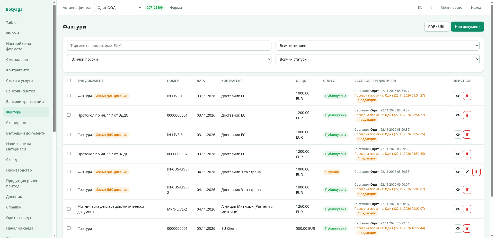

Начало · Фактури
Фактури
Издаване и осчетоводяване на фактури.
Издаване
Фактурата има тип (фактура, дебитно/кредитно известие, проформа), контрагент, редове (артикул, количество, цена, ДДС), опции за начисляване на ДДС и място. Сканираните фактури се разпознават и предлагат редове.
Осчетоводяване
Потвърдена фактура се записва в дневника с контрагента и ДДС (411/701/4532 или 401/601/4531), според посоката, и по желание — банково плащане. Кредитните известия обръщат сумата.
Държави и ДДС
Чуждестранна доставка от ЕС/трети страни и протокол по чл. 117 се отразяват в двата дневника.
